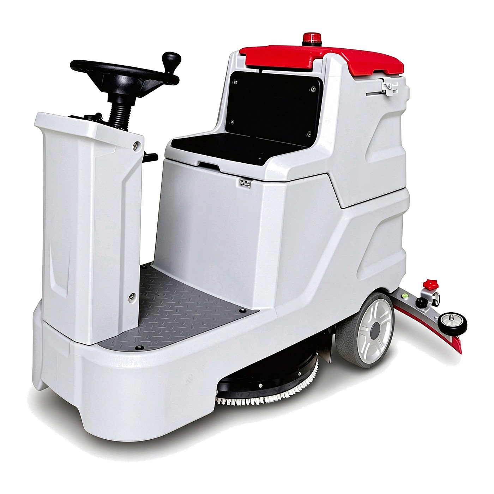

Detailed Specifications
| Model | SD-104 |
|---|---|
| Machine type | Manual ride-on scrubber dryer — one 22 in disc brush, scrubbing and drying in one pass |
| Product size (L x W x H) | 1560 × 1000 × 1190 mm |
| Working width | 600 mm |
| Squeegee width | 1050 mm |
| Working efficiency | 3000 m²/h |
| Brush pressure | 30 kg |
| Diameter of brush disc | 22 in / 700 mm |
| Washing brush power | 24 V / 500 W |
| Rear drive motor power | 500 W |
| Suction motor power | 24 V / 400 W |
| Voltage | 24 V / 100 A |
| Battery | 100 Ah |
| Working time | 3–4 hours |
| Battery charging time | 6–8 hours |
| Cleaning water tank volume | 65 L |
| Sewage tank volume | 70 L |
| Net weight | 230 kg |
| Gross weight | 245 kg |
The SD-104 is a manual ride-on scrubber dryer: the operator sits, drives and steers, while a single 600 mm disc brush scrubs and a 1050 mm squeegee lifts the dirty water behind it. One pass leaves the floor clean and dry — 3000 m²/h, 30 kg brush pressure, 22 inch (700 mm) brush disc.
One brush and one motor is the whole scrub system. The disc is a single 22 inch brush driven by a 24 V / 500 W motor, so there is one deck to check, one brush to change and one motor to service — fewer wear parts than a twin-brush deck, and a brush that reaches under shelving edges and into corners a wide deck cannot enter. The 1050 mm squeegee is wider than the 600 mm scrub path, so the water is picked up before the rear wheels reach it and no strip is left wet behind the machine.
The tanks are matched to a working shift, not to a whole day: 65 L of clean water and 70 L of recovery, with a 24 V / 100 Ah battery pack giving 3–4 hours of running time and a 6–8 hour charge overnight. Drive comes from a 500 W rear motor and suction from a 24 V / 400 W motor, so the machine moves and dries without a cable dragged across the floor. It measures 1560 × 1000 × 1190 mm, 230 kg net and 245 kg gross — compact enough for a service lift or a delivery ramp.
It suits mid-size floors where a walk-behind machine means too many passes but a wider deck is more than the aisles allow: warehouse bays, retail floors between fixtures, hotel corridors and lobbies, and small parking decks. Where the floor is one continuous open run without tight turns, a wider ride-on model covers more per hour; where the route threads between racking and counters, 600 mm is the size that keeps moving.
FeliClean builds and exports from Guangzhou: samples by air, orders by LCL or FCL sea freight, quoted EXW, FOB, CIF or door delivered. Brushes, pad drivers and squeegee blades are kept in stock, colour and private label are available under OEM or ODM, the motor carries a 12-month warranty, and quotations usually go out within one working day.
600mm Manual Ride-on Scrubber Dryer SD-104
A compact seated scrubber dryer with one 22 inch disc brush on a 600 mm working width, a 1050 mm squeegee and 30 kg brush pressure rated at 3000 m²/h, running 3–4 hours on a 24 V / 100 Ah battery with 65 L clean and 70 L recovery tanks — sized for mid-size warehouse, retail and hotel floors.